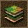
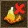
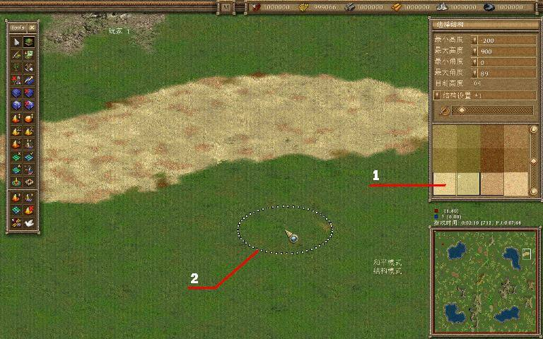

现在你已经创造了水面和高地，是时候用不同的地貌纹理创造地面了。让山谷裡长满了青草，让山坡上有石头，让戈壁上有黄沙。一个逼真的纹理创建模式允许你创造你想要的世界。
单击这个按钮激活纹理模式。在屏幕右边工具栏的下部，你可以看见一个选择不同纹理的区域。你可以选择任何一种纹理来编辑你的地面。
为了用一个新的纹理覆盖一个区域，左键点击你想修改的这个区域。左键点击地图，你的鼠标画笔划过的地方将会显现你选择的纹理。使用屏幕右边的滚动条你可以改变鼠标画笔的大小。如果你想获得一个混合的纹理，你可以通过按住键盘上的“Ctrl”来选取几种纹理。当你按住“Ctrl”键点击纹理的时候，会有数字显示在你选择的纹理上。这些数字意味著这个纹理在你生成纹理过程中的概率。通过多次点击这个纹理，你可以增大这种纹理显示的概率。你可以通过在纹理选择框点击鼠标右键减少出现这种纹理的概率。设置完所有的纹理，以及纹理出现的概率之后，你可以在地图上画出纹理了。为了保存你设置的纹理，你可以使用专门的纹理保存栏。如果你想要你设置的纹理在下次使用，你可以把任何分配的纹理结果保存起来。
纹理设置模式可以让你快速地将需要的地区用该纹理填充。设置最大和最小的高度可以让你用纹理覆盖地图上所有高度不同的地区（例如山脉），地图上的纹理不再适用，通过设置别的属性，你可以将你想要的纹理填满地图上的所有角落。
如果你想用一个纹理填充一片複杂地区，在你点击鼠标左键的时候，按住键盘上的“Shift”键。光标会变成一条线，你可以用这条线环绕住你想改变地面纹理的地区。再次按住“Shift”键点击鼠标左键，你将在围绕的地区中填满你要的纹理。
有时候高山会 遮挡住你想填充地区的视线， 在这种时候，你可以使用2D模式。点击这个按钮让地图上所有的山变平坦，这时，你就可以自由地修改刚才被遮住的地区了。再次点击这个按钮将使山和高地回复原来的面貌。

1、 选择一个或几个相应的纹理
2、 点击鼠标，就能改变地面